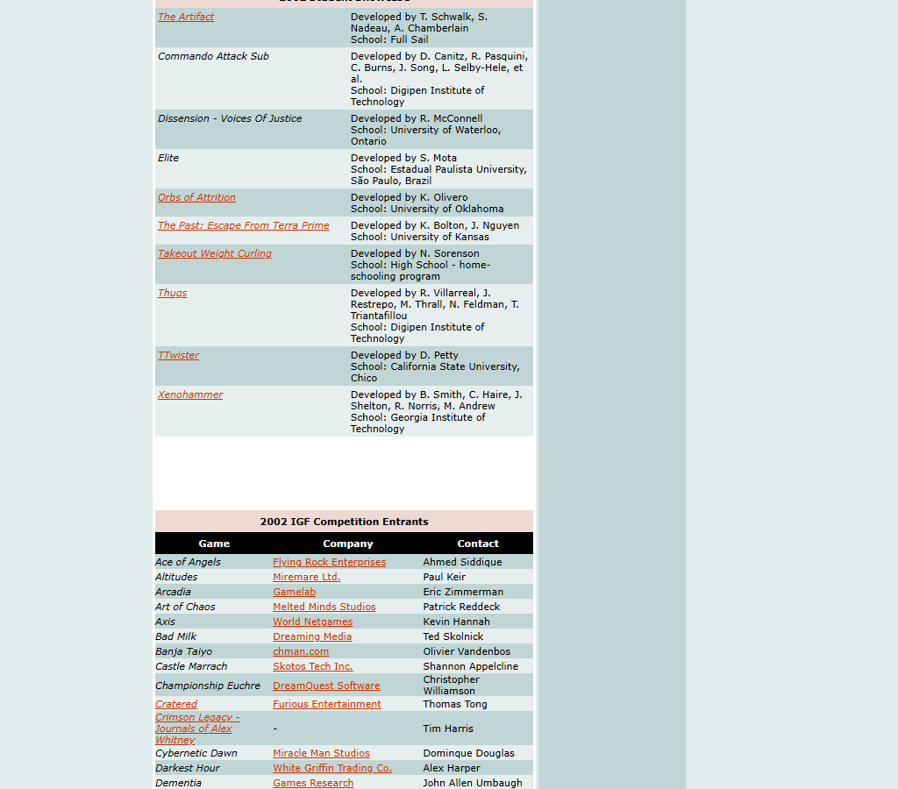

Why it matters
This is the cleanest third-party award confirmation in the archive: Xenohammer appears in the published 2002 IGF Student Showcase list with the credited Georgia Tech team.
This board preserves the simplest and most important fact in the historical record: Xenohammer was named as one of the ten 2002 IGF Student Showcase selections.

This is the cleanest third-party award confirmation in the archive: Xenohammer appears in the published 2002 IGF Student Showcase list with the credited Georgia Tech team.